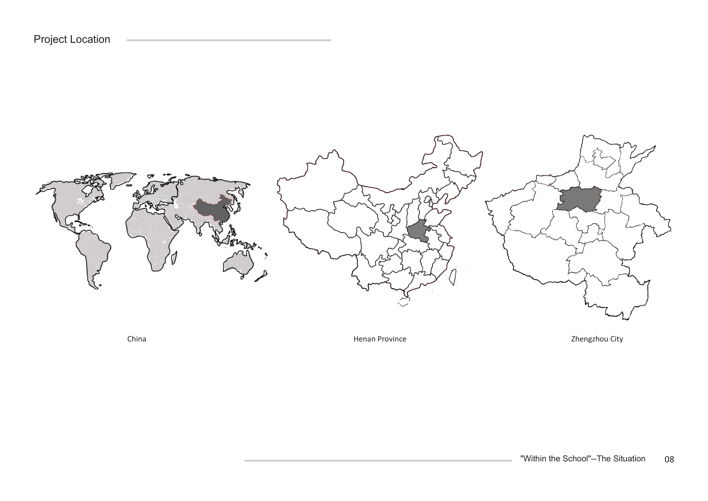
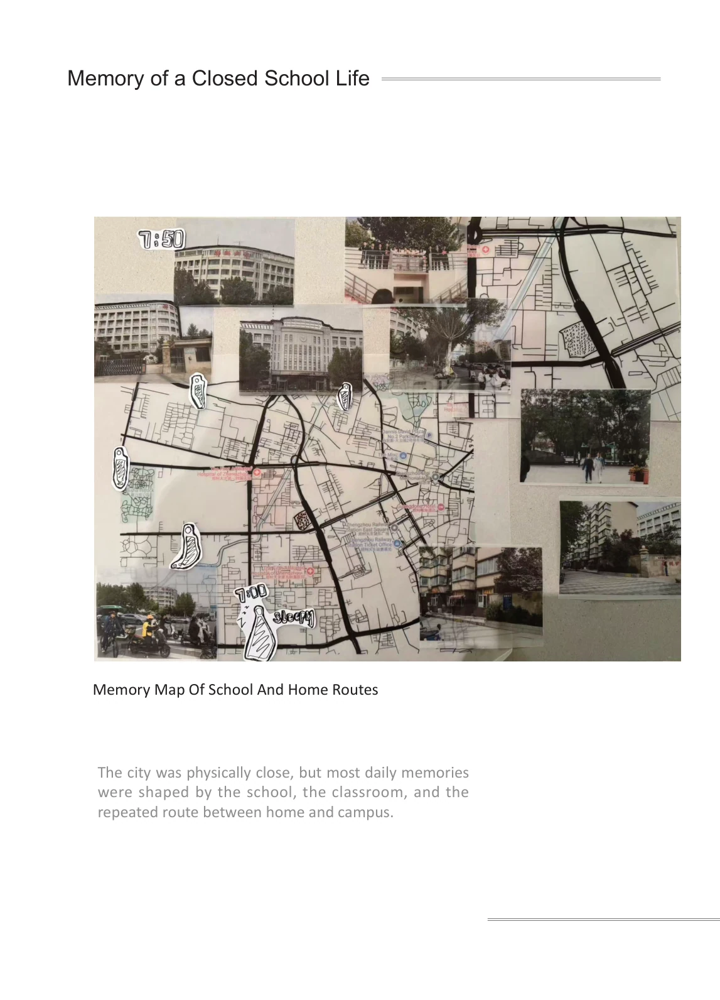
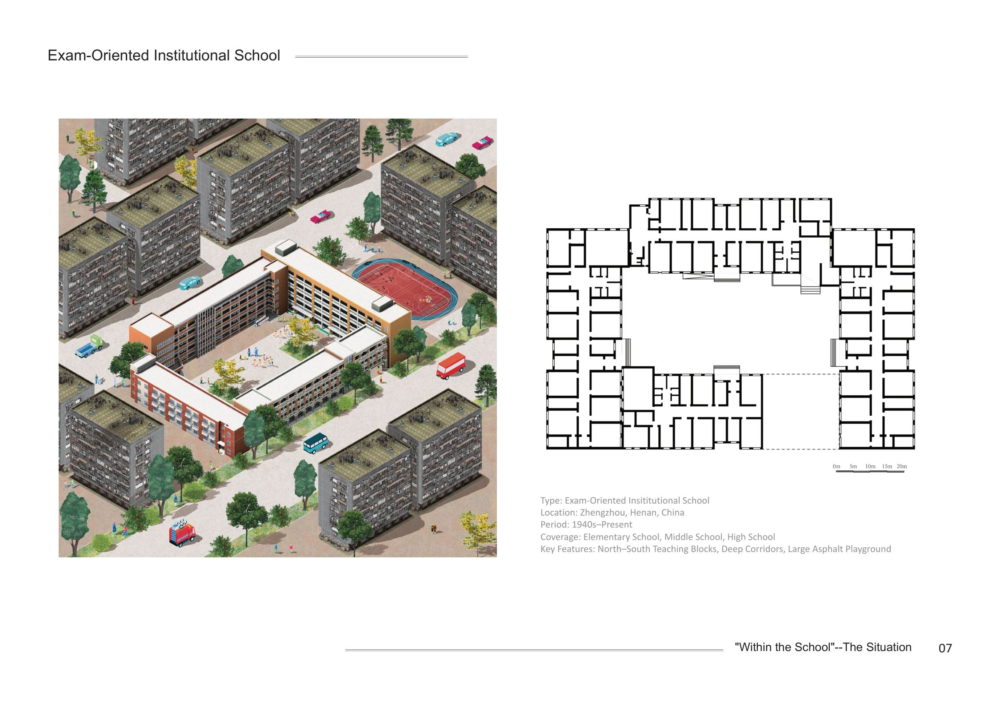

Current research · Cambridge MArch · Ongoing
Lingering Spaces as a Medium of Care
Informal school environments, sensory qualities and emotional well-being in high-pressure Chinese secondary schools
The study examines how school entrances, corridors and small outdoor spaces are inhabited, adapted and experienced by students. It investigates whether spatial and sensory conditions create or limit opportunities to pause, interact, withdraw and regulate everyday emotions.
Research focus & method
Based on UK inclusive school precedents and fieldwork in Zhengzhou, China, the dissertation studies entrance thresholds, circulation corridors and internal green areas. It pays particular attention to places students already occupy briefly, even where lingering has not been explicitly designed for.
Methods combine spatial and sensory observations, questionnaires, interviews and comparative architectural analysis. The work distinguishes observed spatial behaviour from self-reported emotional experiences, and treats high-pressure educational culture as the context for a specific architectural problem: how formal spatial organisation responds to actual daily use.
The school context in Zhengzhou
The study is grounded in the architectural setting of exam-oriented secondary schools in Zhengzhou, Henan. School layouts often prioritise efficiency, clear circulation and supervision. This context helps explain why spaces for informal pauses and withdrawal are easily overlooked.






Cross-context comparison
The conference poster compares threshold conditions at a UK inclusive-school precedent and a pilot school entrance in Zhengzhou. It highlights the role of spatial buffers, room to pause beside circulation, and a choice of sensory conditions.
Linking research with studio design
The same school also informed a Cambridge MArch studio proposal. The studio explores possible ground-floor changes, while the dissertation develops the evidence and spatial understanding behind questions of lingering, inclusive design and everyday care.